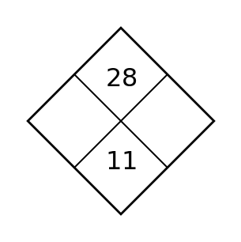
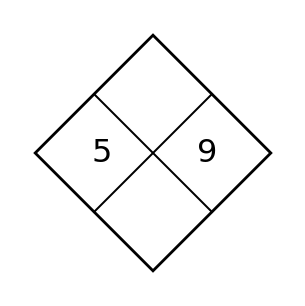
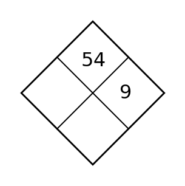
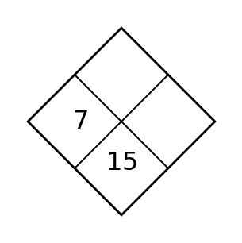

0.1 Get Acquainted — Extra Practice
1. Compute $\frac{3}{5}\cdot\frac{10}{21}$ and simplify.
2. Compute $\frac{7}{8}\cdot\frac{4}{21}$ and simplify.
3. Compute $\frac{2}{3}+\frac{1}{9}$ and simplify.
4. Compute $\frac{5}{12}+\frac{1}{4}$ and simplify.
5. Solve $x+11=29$.
6. Solve $9x=63$.
7. Solve $x-7=-12$.
8. Solve $\frac{x}{6}=-4$.
9. State the quadrant containing $(3,-5)$.
10. State the coordinates of a point that is 4 units left and 2 units up from the origin.
11. Plot $C=(3,4)$ and label it.

12. Point $D=(-5,-2)$. State its $x$-coordinate and $y$-coordinate.
13. Complete the diamond.

14. Complete the diamond.

15. Complete the diamond.

16. Complete the diamond.
